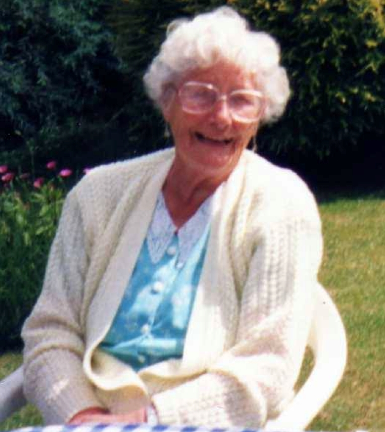

Lillian Ethel Hodge (née Cowell) 1919 - 2001
[ Home ] | [ Calendar ] | [ Surnames Index ] | [ Census Index ] | [ Family History ]A leather machinist and the youngest of 3 children of John Cowell (a general carman) and Ethel Kilsby, Lillian Cowell, the fourth cousin once-removed on the mother's side of Nigel Horne, was born in Weedon Bec, Northamptonshire, England on Nov 9, 19191,2. She married Arthur Hodge in Daventry, Northamptonshire, England around Feb 19413.
During her life, she was living at White House Flats in Weedon Bec on Jun 19, 19214; and at 85 West Street in Daventry on Sep 29, 19391.
She died on Feb 21, 2001 in Weedon Bec2 and was buried on Feb 27, 2001.
Parents
- John Francis was born on Sep 16, 1881
- Ethel Blanche was born on Mar 20, 1892
Citations
- 1939 Register - Findmypast (was recorded at this address)
- England & Wales deaths 1837-2007 - Findmypast
- England & Wales marriages 1837-2008 - Findmypast
- 1921 Census Of England & Wales - Findmypast (was age 1 and the daughter of the head of the household)
Media
Lillian Cowell

England & Wales marriages 1837-2008 - BMD/M/1941/1/AZ/000247/013
England & Wales deaths 1837-2007 - BMD/D/2001/2/84301233
1939 Register Transcription - TNA-R39-6140-6140G-010-02
1939 Register Transcription - TNA-R39-6140-6140G-010-01
Family Tree

Generated by ged2site. Last updated on Jun 11, 2024